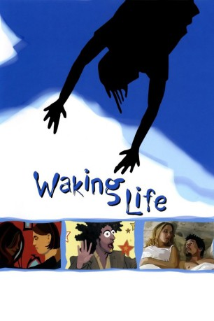

#2380 Waking Life
 
 IMDB-Wertung: 7.8 / 10
IMDB-Wertung: 7.8 / 10  Metascore: 82
Metascore: 82 
WAKING LIFE erzählt die Geschichte eines jungen Mannes und seiner Reise durch die Welt der Träume: eine Welt der Weisheiten des 20. Jahrhunderts, in die Sphäre von Sein und Geist. In seinen surrealen Traum- und Wachsequenzen begegnet er Freunden, Fremden und berühmten Persönlichkeiten wie Julie Delpy, Ethan Hawke, Regisseur Steven Soderbergh und Richard Linklater höchst selbst. Sie philosophieren über den Sinn des Lebens, über menschliche Existenz, Reinkarnation, Wahrnehmung, über Realität. Geplagt wird unser Protagonist dabei von der wachsenden Erkenntnis, dass er in seinen Träumen gefangen ist - und es aus unerfindlichen Gründen nicht schafft, aufzuwachen…
Jahr: 2001
Dauer: 100 Minuten
FSK: 12
Land: USA Studio: Fox Searchlight PicturesTonspuren: DTS - ,
Untertitel:
Auflösung: 1080p (1920x1040) Größe: 4444 MB
Genre: Animation/Trick, Drama, Fantasy
Regisseur:  Richard Linklater
Richard Linklater
Drehbuch: Richard Linklater
Soundtrack: Glover Gill
Darsteller:
- Lorelei Linklater als Young Girl Playing Paper Game
- Wiley Wiggins als Main Character
 Bill Wise als Boat Car Guy
Bill Wise als Boat Car Guy- Kim Krizan als Herself
 Ethan Hawke als Jesse
Ethan Hawke als Jesse Julie Delpy als Celine
Julie Delpy als Celine- Caveh Zahedi als Himself
 Adam Goldberg als One of Four Men
Adam Goldberg als One of Four Men Nicky Katt als One of Four Men
Nicky Katt als One of Four Men- Timothy 'Speed' Levitch als Himself
- Steve Brudniak als Goatee Man
- Steven Soderbergh als Interviewed on television
 Mona Lee Fultz als Quiet Woman at Restaurant
Mona Lee Fultz als Quiet Woman at Restaurant- Louis Black als Kierkegaard Disciple
- Richard Linklater als Pinball Playing Man / Man on Back of Boat
- Trevor Jack Brooks als Young Boy Playing Paper Game
- Glover Gill als Accordion Player
- Lara Hicks als Violin Player
- Ames Asbell als Viola Player
- Leigh Mahoney als Viola Player
- Sara Nelson als Cello Player
- Jeanine Attaway als Piano Player
- Erik Grostic als Bass Player
- Robert C. Solomon als Philosophy Professor
- Eamonn Healy als Shape-Shifting Man
- J.C. Shakespeare als Burning Man
- Charles Gunning als Angry Man in Jail
- David Sosa als Himself
- Alex Jones als Man in Car with P.A.
- Otto Hofmann als Himself
- Aklilu Gebrewold als Himself
- Carol Dawson als Coffee Shop Chatter
- Lisa Moore als Coffee Shop Chatter
- Steve Fitch als Chimpanzee
- Louis Mackey als Himself
- Alex Nixon als Man Writing a Novel at the Bar
- Violet Nichols als Woman Talking to the Novel Writer
- Steven Prince als Man Talking to the Bartender
- Ken Webster als Bartender
- Mary McBay als Woman on TV
- Kregg A. Foote als Man on TV
- Jason T. Hodge als Man with the Long Hair
- Guy Forsyth als Himself
- John Christensen als Guy Talking about Turning the Light on in Dreams
- David Jewell als Man Talking to Caveh
 Jason Liebrecht als One of Four Men
Jason Liebrecht als One of Four Men- Brent Green als One of Four Men
- RC Whittaker als Man on the Lamppost
- Hymie Samuelson als Mr. Debord
- David Martínez als Man on the Train
Datei: X:\2001\Waking Life (2001, FSK12, 1920x1040).mkv seit 04.11.2015
Festplatte: HD 1996-2002
 Es gibt insgesamt 102 Filme in der Gruppe '2001'
Es gibt insgesamt 102 Filme in der Gruppe '2001'